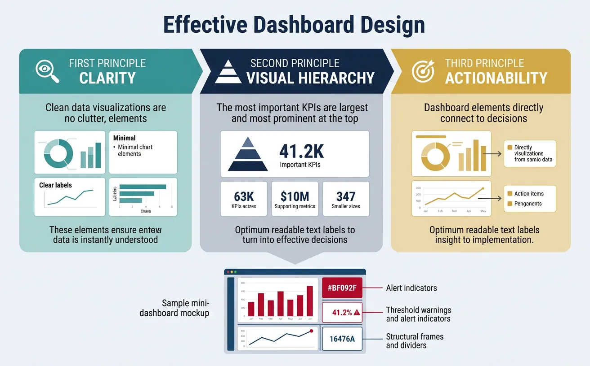
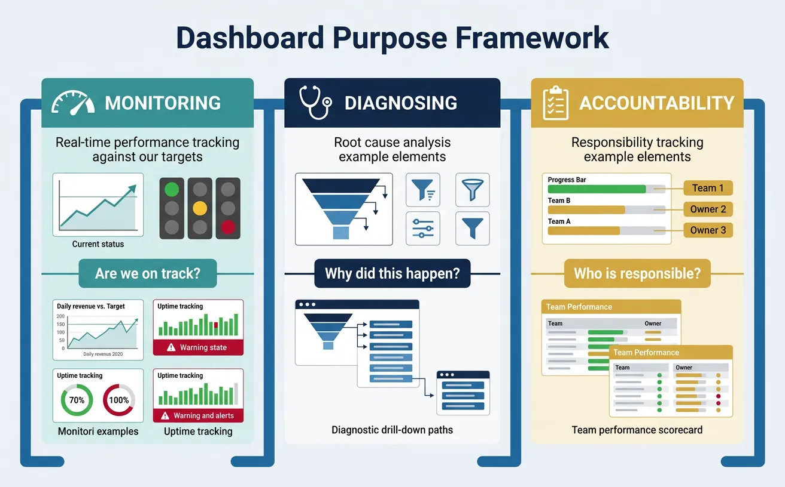
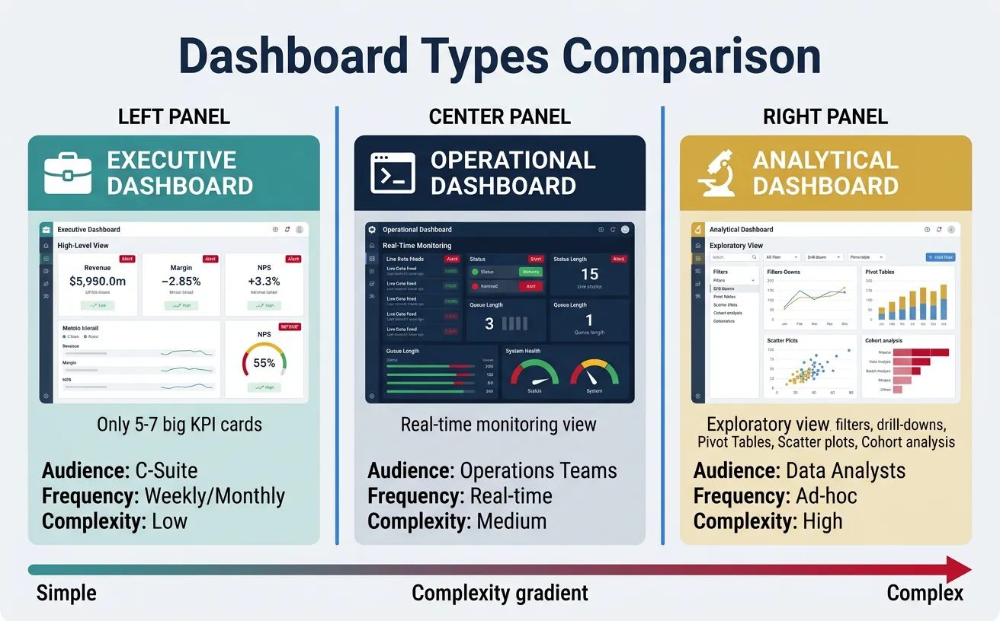
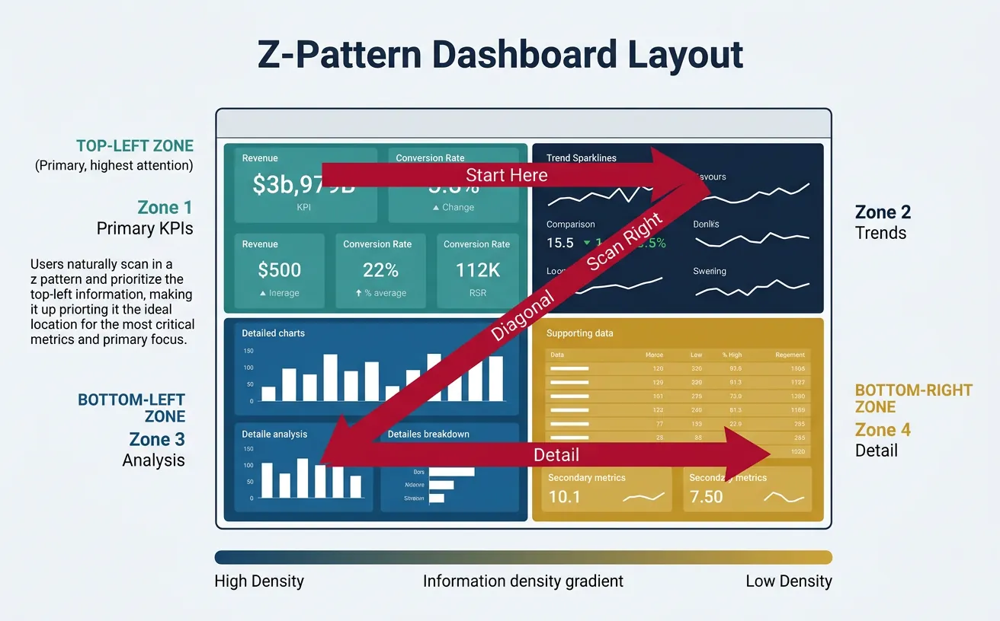
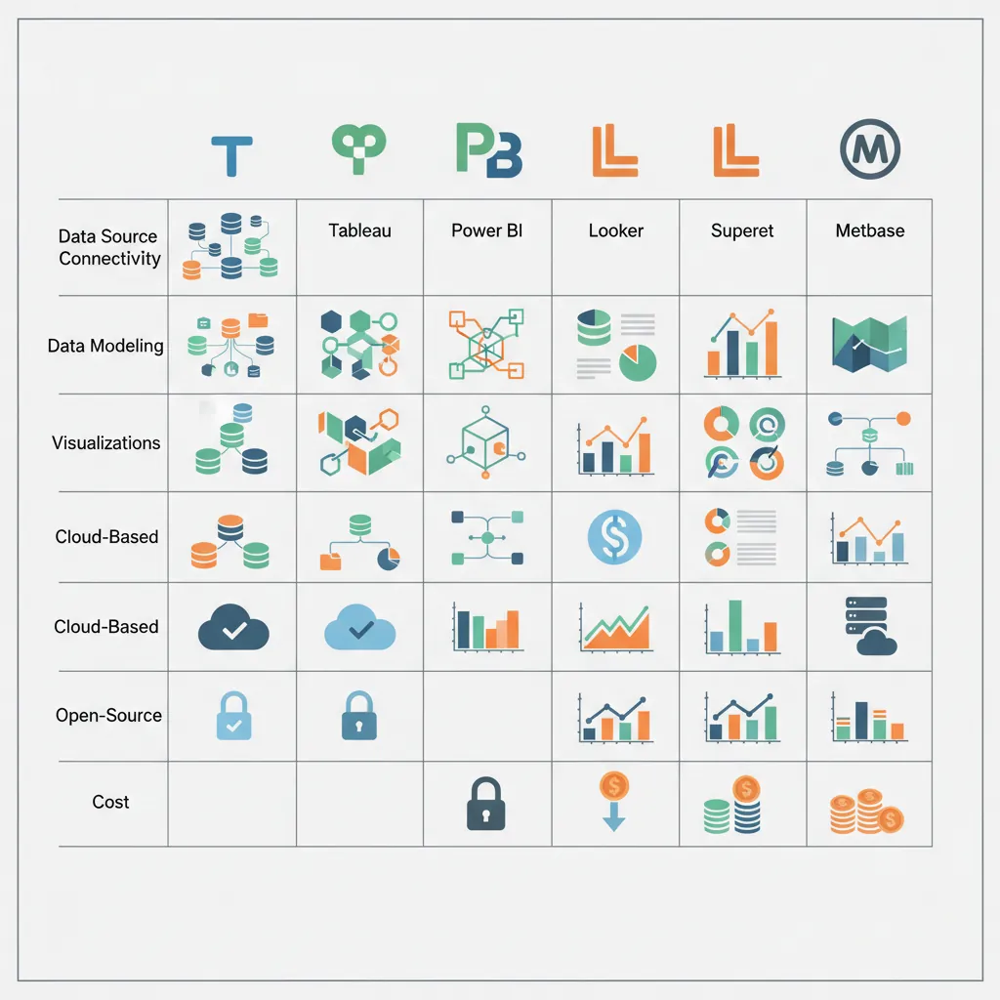

1. Introduction
A dashboard is a visual display of the most important information needed to achieve objectives, consolidated on a single screen so it can be monitored at a glance. Great dashboards turn data into decisions—bad ones create confusion and distrust.

The Goal of a Dashboard
"A dashboard is not about making data pretty. It's about making data useful. The best dashboard is one that someone looks at and immediately knows what to do next."
Data-Driven Decisions
Introduction to Business Analytics & DDDM
Analytics maturity, data-driven culture, business valueDefining & Tracking KPIs
OKRs, leading/lagging indicators, scorecard designDashboard Design & BI Tools
Tableau, Power BI, dashboard best practices, data vizExperimentation & A/B Testing
Hypothesis testing, control groups, sample sizingStatistical Significance & Interpretation
P-values, confidence intervals, effect size, power analysisDecision Frameworks & Structured Decision Making
Decision matrices, Bayesian thinking, risk analysisData Collection & Quality Management
Surveys, ETL, data governance, cleaning pipelinesBusiness Storytelling & Visualization
Narrative structure, chart selection, audience designPredictive Analytics & Forecasting
Regression, time series, ML models, forecasting methodsData-Driven Culture & Organizational Adoption
Change management, data literacy, organizational buy-inFunction-Specific Data Applications
Marketing, finance, operations, HR analyticsCapstone Projects (Portfolio-Ready)
End-to-end analytics projects, portfolio buildingAdvanced Analytics & Automation
ML pipelines, AutoML, real-time analytics, AI integration2. Dashboard Purpose
Every dashboard should serve at least one of these three purposes. Before building, ask: What action will this enable?

Monitoring
Monitoring dashboards track ongoing performance against targets. They answer: "Are we on track?"
- Daily revenue vs. target
- System uptime and error rates
- Marketing campaign performance
Key features: Real-time or near real-time data, clear thresholds (red/yellow/green), trend lines.
Diagnosing
Diagnostic dashboards help identify the cause of problems. They answer: "Why did this happen?"
- Drill-down from high-level metrics to contributing factors
- Segment comparisons (by region, product, customer type)
- Time series with anomaly highlighting
Key features: Filters, drill-through capability, segment breakdowns, correlation views.
Accountability
Accountability dashboards track progress against commitments. They answer: "Who is responsible and how are they doing?"
- OKR/goal tracking by team or individual
- Sales pipeline by rep
- Project milestone tracking
Key features: Owner names, progress indicators, historical trend vs. commitment.
Define dashboard purpose, key metrics, data sources, visualizations, and access requirements. Download as Word or PDF.
All data stays in your browser. Nothing is sent to or stored on any server.
3. Dashboard Types
Match the dashboard type to the audience and use case.

Executive Dashboards
Designed for C-suite and senior leadership:
- Scope: Company-wide or business unit level
- Frequency: Weekly or monthly updates
- Metrics: High-level KPIs (revenue, margin, NPS, churn)
- Design: Simple, minimal, no more than 5-7 key metrics
Executive Dashboard Principles
- Less is more: Every element must earn its place
- Context matters: Show vs. target, vs. prior period
- Spark action: Highlight exceptions and outliers
Operational Dashboards
Designed for managers and frontline teams:
- Scope: Team or process level
- Frequency: Real-time to daily
- Metrics: Operational KPIs (throughput, queue depth, response time)
- Design: Dense, actionable, with clear alerts
Analytical Dashboards
Designed for analysts and data teams:
- Scope: Exploratory, often cross-functional
- Frequency: On-demand
- Metrics: Varied, often ad-hoc
- Design: Interactive, with filters, drill-downs, and segmentation
| Attribute | Executive | Operational | Analytical |
|---|---|---|---|
| Audience | C-suite | Managers/Team leads | Analysts |
| Refresh | Weekly/Monthly | Real-time/Daily | On-demand |
| Complexity | Low | Medium | High |
| Interactivity | Minimal | Moderate | Extensive |
4. Design Principles
Great dashboards follow universal design principles that maximize comprehension and minimize cognitive load.

Clarity First
Remove everything that doesn't contribute to understanding:
- No chart junk: Remove 3D effects, unnecessary gridlines, decorative elements
- Clear labels: Every chart needs a title, axis labels, and units
- Meaningful titles: "Revenue by Region" is better than "Chart 1"
- Data-ink ratio: Maximize the proportion of ink used for data vs. decoration
Visual Hierarchy
Guide the eye to what matters most:
- Position: Top-left is seen first (in LTR languages)
- Size: Larger elements are more important
- Color: Use color to highlight exceptions, not decorate
- Grouping: Related metrics should be visually grouped
Dashboard Layout Pattern (Z-Pattern)
┌─────────────────────────────────────────────────────┐ │ [1] PRIMARY KPI [2] SECONDARY KPIs │ │ (Revenue, Users) (Growth %, Trend) │ │ │ ├─────────────────────────────────────────────────────┤ │ [3] SUPPORTING DETAIL [4] CONTEXT / SEGMENTS │ │ (Breakdown by segment) (Comparisons, filters) │ │ │ └─────────────────────────────────────────────────────┘ Eye follows: 1 → 2 → 3 → 4 (Z-pattern)
One Key Insight Per Screen
Every dashboard should have a clear answer to: What is the one thing I should take away?
- Lead with the headline: Put the most important metric prominently
- Support with evidence: Surrounding charts explain the headline
- Avoid cognitive overload: 7±2 elements per screen maximum
5. Visualization Best Practices
Choosing Chart Types
Match the chart to the question being answered:
| Question | Best Chart Type | Avoid |
|---|---|---|
| How has it changed over time? | Line chart, area chart | Pie chart |
| How do categories compare? | Bar chart (horizontal for many categories) | Stacked area |
| What is the distribution? | Histogram, box plot | Pie chart |
| What is the composition? | Stacked bar, treemap | 3D pie chart |
| What is the correlation? | Scatter plot | Line chart |
| What is the geographic pattern? | Choropleth map | Bar chart |
Charts to Avoid
- 3D charts: Distort perception and add no value
- Pie charts with many slices: Hard to compare; use bar charts instead
- Dual-axis charts: Often misleading; use separate charts
- Gauge charts: Waste space; use KPI cards instead
Color Usage
Color is powerful but easily misused:
- Semantic meaning: Red = bad/danger, green = good, yellow = warning
- Limit palette: 5-7 colors maximum
- Accessibility: Test for colorblind users (use patterns or labels as backup)
- Consistency: Same color = same meaning across all dashboards
6. BI Tools Comparison
The right tool depends on your data stack, team skills, and budget.

Tableau
- Best for: Visual exploration, complex visualizations
- Strengths: Beautiful charts, intuitive drag-and-drop, strong community
- Weaknesses: Expensive, limited semantic layer, governance challenges
- Pricing: $70/user/month (Creator), $15/user/month (Viewer)
Power BI
- Best for: Microsoft shops, self-service BI
- Strengths: Affordable, excellent Excel integration, strong DAX language
- Weaknesses: Less flexible visualizations, Windows-centric
- Pricing: $10/user/month (Pro), $20/user/month (Premium per user)
Looker (Google Cloud)
- Best for: Data teams wanting strong governance and semantic layer
- Strengths: LookML modeling language, embedded analytics, Git integration
- Weaknesses: Steep learning curve, less ad-hoc exploration
- Pricing: Custom pricing (typically $3K-$5K/month starting)
Superset & Metabase
Apache Superset:
- Best for: Open-source, technical teams
- Strengths: Free, SQL-native, good for data teams
- Weaknesses: Requires self-hosting, less polished UX
Metabase:
- Best for: Small teams, self-service
- Strengths: Easy setup, good free tier, natural language queries
- Weaknesses: Limited advanced features
| Tool | Best For | Starting Price |
|---|---|---|
| Tableau | Visual exploration, enterprise | $70/user/month |
| Power BI | Microsoft stack, cost-conscious | $10/user/month |
| Looker | Data governance, embedded | Custom (~$3K/mo) |
| Superset | Open-source, technical teams | Free (self-hosted) |
| Metabase | Small teams, quick start | Free (open-source) |
7. Real-time vs Batch Dashboards
Not every dashboard needs real-time data. Match refresh frequency to decision frequency.
| Refresh Type | Use Case | Complexity/Cost |
|---|---|---|
| Real-time (<1 sec) | Fraud detection, system monitoring, trading | High (streaming infrastructure) |
| Near real-time (1-15 min) | Operations, customer support queues | Medium |
| Hourly | Marketing campaigns, sales tracking | Low-Medium |
| Daily | Most business dashboards | Low |
| Weekly/Monthly | Executive reporting, board decks | Low |
8. Function-Specific Dashboards
Different functions have different dashboard needs:
Dashboard by Function
Sales: Pipeline dashboard (stages, values, velocity), rep performance, forecast vs. actual
Marketing: Campaign performance, funnel metrics, channel attribution, CAC trends
Product: Feature usage, retention cohorts, NPS/CSAT, error rates
Finance: P&L summary, cash flow, budget vs. actual, AR aging
Engineering: Deployment frequency, incident metrics, code quality, velocity
Customer Success: Health scores, renewal pipeline, support metrics, expansion revenue
9. Conclusion & Next Steps
Key Takeaways
- Purpose drives design: Monitoring, diagnosing, or accountability
- Match dashboard to audience: Executive, operational, or analytical
- Follow design principles: Clarity, hierarchy, one key insight
- Choose charts wisely: Match visualization to the question
- Select the right tool: Based on stack, skills, and budget
In the next article, we'll cover Experimentation & A/B Testing—how to design rigorous experiments that prove causation, not just correlation.